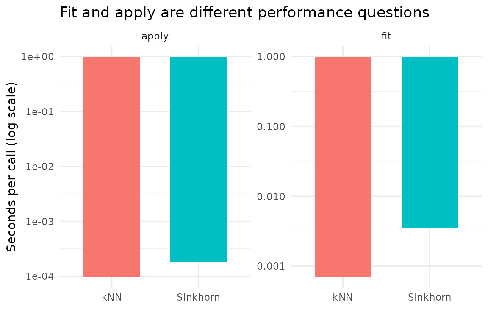

Spatial mapping can dominate runtime when it is repeatedly refit for many contrasts or resamples. The first performance decision is therefore not simply “which mapper is fastest?” but “which stage can be fitted once and safely reused?”
This page separates mapper fit cost from
apply cost, then explains when kNN, Sinkhorn, warm
starts, or a custom mapper are appropriate. It assumes you already
understand why transport is needed; see
vignette("dkge-dense-rendering") for that workflow.
| Need | Start with | Tradeoff |
|---|---|---|
| Fast local interpolation | kNN | no global mass-matching constraint |
| Mass-preserving global coupling | Sinkhorn | more expensive fit and tuning |
| Many fields on unchanged geometry | either fitted mapper | reuse the operator; do not resolve |
Mapper Factory Recap
library(dkge)
dkge_mapper("knn", k = 8, sigx = 3)
#> $method
#> [1] "knn"
#>
#> $pars
#> $pars$k
#> [1] 8
#>
#> $pars$sigx
#> [1] 3
#>
#>
#> attr(,"class")
#> [1] "dkge_mapper_knn" "dkge_mapper"
dkge_mapper("sinkhorn", epsilon = 0.05, lambda_xyz = 1, lambda_feat = 0)
#> $method
#> [1] "sinkhorn"
#>
#> $pars
#> $pars$epsilon
#> [1] 0.05
#>
#> $pars$lambda_xyz
#> [1] 1
#>
#> $pars$lambda_feat
#> [1] 0
#>
#>
#> attr(,"class")
#> [1] "dkge_mapper_sinkhorn" "dkge_mapper"The dkge_mapper() function configures the dense spatial
pipeline. A fitted Sinkhorn mapper keeps the joint plan, the
target-conditional application operator, and convergence diagnostics.
Reusing that fitted object makes later apply_mapper() calls
matrix multiplications rather than new OT solves.
Speed Comparison
knitr::kable(performance, digits = 5)| stage | mapper | seconds_per_call |
|---|---|---|
| fit | kNN | 0.00070 |
| fit | Sinkhorn | 0.00350 |
| apply | kNN | 0.00010 |
| apply | Sinkhorn | 0.00018 |

The table separates the solve from application. kNN fitting constructs local neighbourhoods; Sinkhorn fitting constructs a dense cost matrix and iterates to match both marginals, so its fit is usually the expensive stage. Once fitted, both backends reuse their mappings. Measure both stages at your own parcel and anchor counts rather than extrapolating from apply-only timings.
Warm Starts and Dual Caching
DKGE caches duals only after a solve satisfies its requested marginal tolerance. The key includes every cost and mass entry, so warm starts cannot cross between merely similar problems. The cache is process-local; fitted renderer objects store plans and operators, not dual vectors.
dkge_clear_sinkhorn_cache()
cached_mapper <- dkge_mapper("sinkhorn", epsilon = 0.05, lambda_xyz = 1)
cold_fit <- fit_mapper(cached_mapper, centroids, anchors)
warm_fit <- fit_mapper(cached_mapper, centroids, anchors)
rbind(
cold = unlist(cold_fit$stats$diagnostics[c("iterations", "cache_hit")]),
repeated = unlist(warm_fit$stats$diagnostics[c("iterations", "cache_hit")])
)
#> iterations cache_hit
#> cold 10 0
#> repeated 0 1For this exact repeat, the cached converged plan is returned with zero new iterations. If you request a tighter tolerance, DKGE instead uses the cached duals as an initialization and continues solving.
Adding Custom Mappers
A custom mapper implements two S3 methods, following the naming
convention dkge_mapper() recognises.
fit_mapper.dkge_mapper_mytransport <- function(mapper, subj_points,
anchor_points, ...) {
structure(list(Q = nrow(anchor_points)),
class = "dkge_mapper_fit_mytransport")
}
apply_mapper.dkge_mapper_fit_mytransport <- function(fitted_mapper, values, ...) {
rep(mean(values), fitted_mapper$Q)
}
custom <- dkge_mapper("mytransport")
custom_fit <- fit_mapper(custom, centroids, anchors)
head(apply_mapper(custom_fit, values))
#> [1] 0.172 0.172 0.172 0.172 0.172 0.172The constructor accepts the custom identifier and S3 dispatch finds the two methods. A renderer-compatible extension must also validate the standard point inputs and return one value per anchor, as this example does.
Practical Guidance
Pick the mapper from the analysis, not from the benchmark. For quick exploration, or when subject clusters already align anatomically, kNN is efficient and sufficient.
Prefer Sinkhorn when anatomical shifts between subjects are
substantial, or when latent features should guide the matching. Raising
epsilon converges faster and smooths the transport plan, at
the cost of matching precision.
For repeated maps, reuse renderer or fitted-mapper objects so the
already-solved plans and application operators are retained. Warm-start
caching is most useful when an identical fit is requested again; check
warm_fit$stats$diagnostics on the fitted assuming that a
cache was used.
Where to go next
-
vignette("dkge-dense-rendering")— what the mappers benchmarked here are actually for, if you arrived at this page from a search. -
vignette("dkge-anchors")— anchor construction, which sets the problem size the mappers are solving.